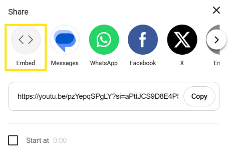

How to Embed A Service-Hosted Video Into A Website
Get your video ready and look for the "share" option. This will include the embedded code you'll need for your website
Look for an "embed" button, which should be the first, and click on that

Once clicked, a window will pop up. To the right is the embed code. On the bottom right is the "copy" button. Clicking that will be copied to your clipboard.